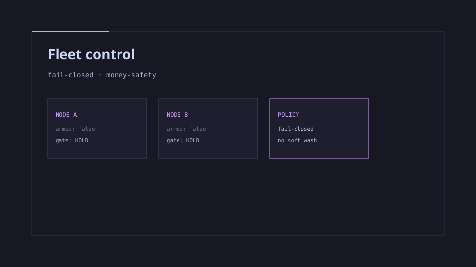

Problem
Automated fleet actions that touch money fail open by default in too many systems. Soft language (“AI trading”) hides the real requirement: gates that refuse unsafe action.
Fleet control with fail-closed money-safety gates — not a soft-washed generic “AI trading” story.

Automated fleet actions that touch money fail open by default in too many systems. Soft language (“AI trading”) hides the real requirement: gates that refuse unsafe action.
Systems owner for RSI fleet control with explicit fail-closed money-safety policy — design and implementation accountability.
Encoded policy as hold-by-default: nodes stay unarmed until gates pass; money paths refuse rather than guess. UI and copy keep fail-closed language visible so the product cannot be misread as casual trading automation.
A fleet control plane whose primary virtue is refusal under uncertainty — hire-ready proof of fail-closed systems thinking.